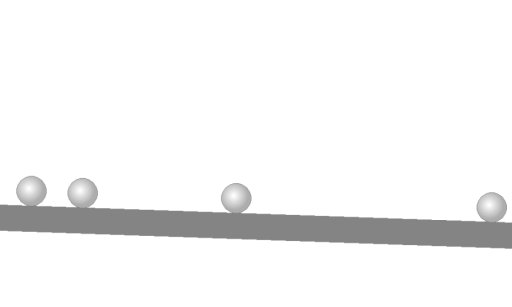
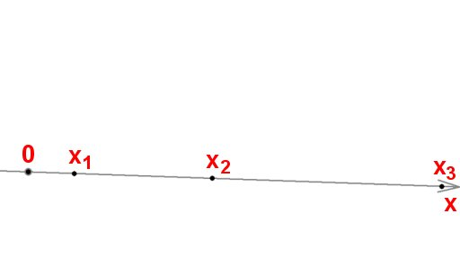
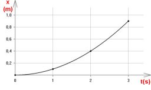
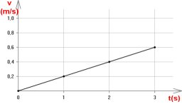
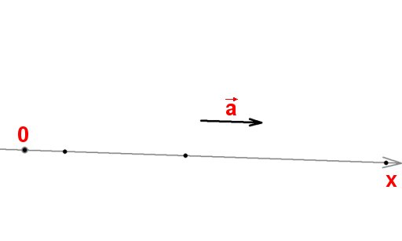
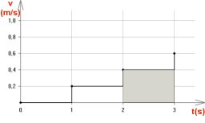
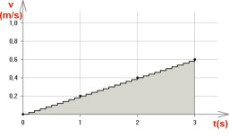

- Fig. 1
- O bilă se rostogoleşte pe o suprafaţă uşor înclinată.
|

- Fig. 2
- Bila redusă la un punct material.
|

- Fig. 3
- Dependenţa de timp a poziţiei bilei.
|

- Fig. 4
- Dependenţa de timp a vitezei bilei.
|

- Fig. 5
- Acceleraţia bilei.
|

- Fig. 6
- Viteza unui punct material creşte în salturi.
|

- Fig. 7
- Creşterea vitezei în salturi dese şi mici.
|
- Fig. 8
- Aria delimitată de graficul viteză−timp este variaţia coordonatei.
|